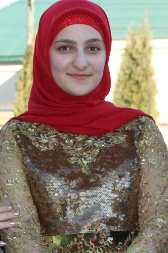

Айшат Кадырова

Айшат — старшая из восьми детей Медни
и Рамзана Кадыровых. Хозяйка бутика - Айшат Кадырова, 18-летняя дочь главы Чеченской республики Рамзана Кадырова, следует из постов гостей в социальных сетях. Некоторые посты были удалены после публикации Би-би-си, но их скриншоты сохранились.
Айшат уже управляет домом исламской моды Firdaws и держит кондитерскую в одноименном торговом центре - рядом с этой кондитерской и открылся бутик с бельем.
В интервью изданию «Лайф» она рассказала, что является
автором эскизов своей коллекции. Айшат призналась также, что их с сестрами давно готовили к тому, чтобы возглавить бренд. «Когда я создала свою первую мини-коллекцию для своей младшей сестры, я поняла, что это мое. Тогда родители и решили, что передадут дом моды мне», — сказала Кадырова.
Всего Айшат Кадырова представила 30 вечерних платьев из бархата, шифона, шелка и французского кружева, расшитых полудрагоценными камнями. Она рассказала, что вдохновлялась национальной чеченской одеждой: «В каждом платье присутствует национальный мотив, как обязательный элемент. Моим советчиком в создании этих образов была только моя мама», — заявила Айшат Кадырова. При этом зрителям дефиле были представлены не только национальные,
но и в европейские костюмы, а также парфюм от модного дома.